Everyone knows Yelp. It’s true. Whenever I go for a dinner with my roommate, it seems like a routine for us to check out Yelp before we decide where to go. The menu seems to lose its importance as we always order based on Yelp’s reviews. We never want to go to a fancy restaurant but end up with a disappointed meal.
But let’s face it: as much as we love Yelp, its web interface is quite appalling. In terms of aesthetics, it’s stuck in the 2000s with pure text buttons, dull color schemes, and so on. It’s like a website directly built in Rails without any touch of style sheet. Above all, there’s more room for improvement in the user experience; when regular users have trouble navigating Yelp’s website, it’s no wonder why new users don’t bother use the website at all.
This time, I choose to start with Yelp’s user details page.
It is good to know that everyone seems to know about Yelp. I spoke to many people before I began to conduct the usability testing so that I can get a general idea about their experiences with Yelp.
Most people I talked to told me that their friends’ recommendation was the reason that they started to use Yelp in the first place. One user also mentioned that she started to use Yelp because every time she googled things up to find a spot to eat, a link to Yelp’s reviews always pops up as the first result. However, Yelp to users is more like a tool to check out reviews and discover restaurants instead of a social network where you can know more friends. Half of the users even told me that they had no idea that they could add friends on Yelp.
With mobile apps getting more and more popular, people seem to forget about the web age when they started to socialize online. It is true that mobile apps are developed to perform tasks than can be done on web, but when it comes social network, people are still used to go online and check up on their friends and get to know new people. Facebook is a good example.
The goal for Yelp is not just about building a robust review system, is more about bringing people together. What’s the fun of writing a review for yourself?
The importance of user details page can be easily underestimated. User details page plays crucial part in connecting people. A good design of this page should be well organized, balanced and simple, just enough for user to get to know about the profile owner. And also the design should be inviting and intuitive.
I conducted a usability testing before I started my redesign for the user details page. The users I chose were active Yelp users with knowledge about Yelp’s regular features. But they were neither the very enthusiastic type with lots of badges, nor the type that knows nothing about Yelp. For the user details page, I chose an elite user who uses Yelp very frequently and engages many activities, because the profile is comprehensive which helps demonstrate the design principles.
From the feedbacks that I’ve gathered, the three main issues with Yelp user details page are:
Layout: lack of hierarchy
Visual hierarchy is an important concept to user experience. A well balanced hierarchy allows user identify the important elements on a web page in a short time. And then engages user into more in-depth content on a web page.
At first glance, most users I tested got totally lost. When I asked them to describe what they saw, they literally listed everything, which suggests that the visual hierarchy has failed to emphasize the most important information. Instead, it jumps directly to the second step for more in-depth content. That is, the first layer of visual hierarchy doesn’t exist in current layout. Information is all over the places.
Navigation: confusing and repetitive
There are actually three navigations here on the user details page. The main one below the search bar. The breadcrumb navigation. And the layout of the sections, which serves as navigation as well. Navigation is good for user to find the information they want quickly. But redundant navigation can only provides a barrier between user and the information they need. Not to mention that a super long navigation with a lot of items on it doesn’t do any good but confuse the users even more. Each navigation should have a reason to be there, and that reason has to be unique.
Content: equally important with no focus
It is not uncommon that users find text much more annoying. We get it. People love graphics, because they’re more direct, more visually attractive, and most of all, more intuitive. Some users even told me how they chose restaurants and order. “Just by pictures”, they said. Indeed, pictures and graphs are always the first things to pop up on a web page. A user especially mentioned that she noticed the rating distribution immediately. Wisely using pictures and graphics on the web page can largely increases the importance of certain elements that users need to see before they dig deeper. For example, the picture of the restaurant.
Some other elements that can be wisely used are for example, typography and space. Well chosen font size and weight can make a huge difference. Also space helps user to identify the relationship between elements and help them filter the information at one glance.
There’re many other methods can be applied to avoid the current highly cluttered visual effects.
Based on the feedbacks I’ve gathered, I focused on three areas when redesigning Yelp user details page:
Aside from these three user experience issues, I wanted to give some aesthetic facelift and some branding overhaul to make the website feel more like a website for social network, not a tool. Right now, Yelp is more like a place where people only go to search things up and get reviews, as if it’s nothing more than a vending machine where they input target places and get reviews as outputs.
The website especially the user details page should be full of people and their conversations, not just wall of text. Above all, the app should feel lively and engaging and yet should stay simple and clean.
I first created a few documentations to organize my thoughts on the page’s purpose and the priorities of features. Then, I went for a quick sketch of the page.
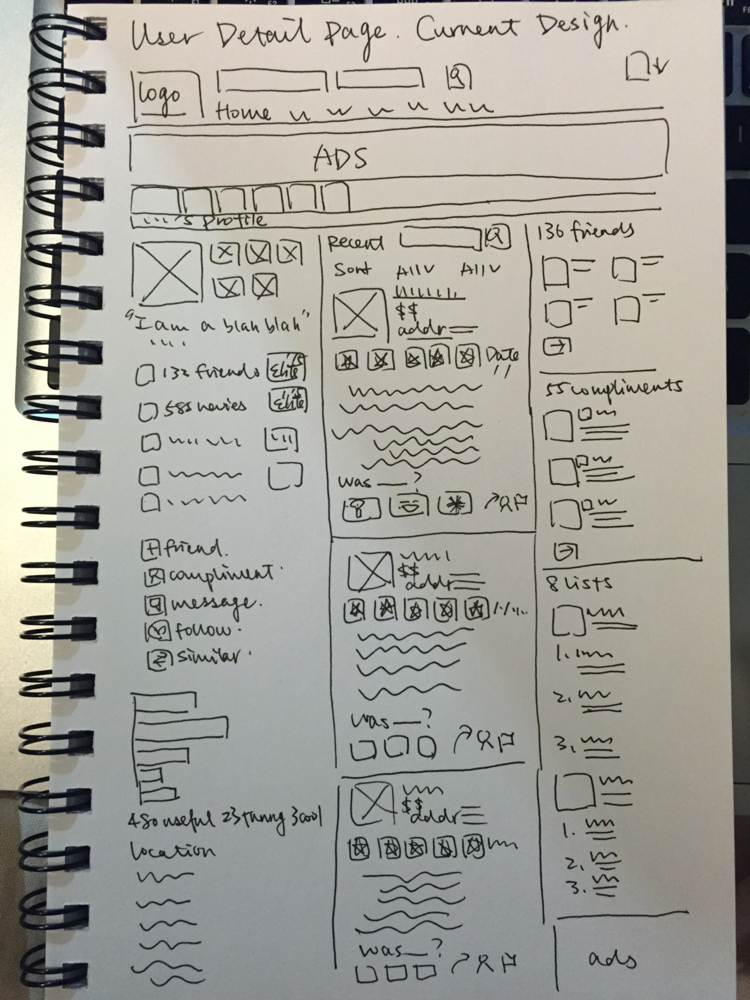 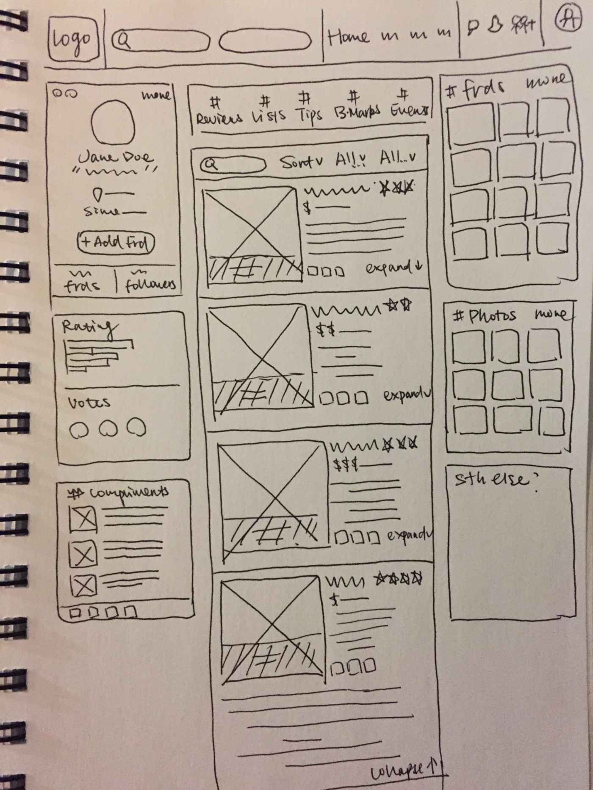I learned from my Perception class that red color can stimulate people’s appetite. So I think it would be good to keep the original red to color the important elements. And I also I kept the gradience from red to yellow to indicate ratings. I used white as background for sections.
The font I used is Proxima Nova, a slightly less formal font compared to Helvetica Neue. The color for headlines is darker than those used for other information, but is not complete black. I tried to play around with size and weight to distinguish elements.
The logo I used here was from the official Yelp style guide, the one with 0.5 px wide black bolder with 50% opacity.
And thanks to Stephen Verhalleman who designed the official icons for Yelp. I used some of them in my redesign.
Colors: red range — #C41200, #EB050B, #F48149, #F0A527, #E4B92B, #D79322, grey range — #494949, #888888
Typography: Proxima Nova — regular for general content, semibold for titles, light for text, sizes — 10 to 24 with larger sizes for titles and headers and smaller ones for text.
A good thing about Yelp’s website is that it’s very informative. However, it is also the reason why it’s hard to keep everything organized. The design goal of the layout is to clearly shows those elements that users expect to see in the right places. The result is a simply organized three-column layout, with the activities in the middle, user information on the left side , and social features and photos on the right side.
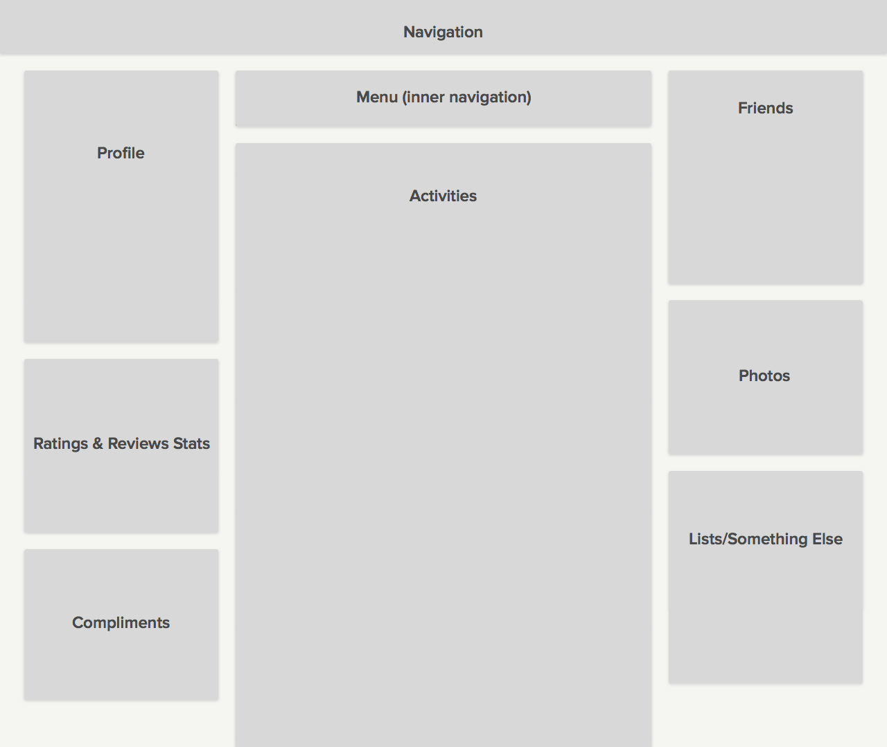To redesign the navigation part first we need to figure out which items to keep.
Although most people know to click the logo to get back to home page, it is more direct to have “Home” on navigation bar. Many users find it handy to have a write a review button somewhere they can see all the time, and it is good for us to keep it in the main navigation bar that way. “About Me”, “Messages”, and “Find Friends” are very personal. It would be better to group them together. Both “Talk” and “Events” are major public pages. We can also keep them. The search bar is definitely the most important part. And it should be large and easy to notice.
The result is a five-section navigation. From left to right is logo, search, page titles, actions, and user profile photo.
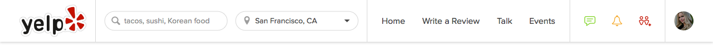The profile should be as simple as possible. But it should also offer enough information. When the badges start to diverge people’s attention, and small font sizes annoy the users, it’s time to figure out a way to make the most information pop out. In addition to what we discussed above about what kind of information to keep, it is also important to notice that an “Add Friend” button is absolutely necessary and extremely crucial. What’s the point of viewing another person’s profile? To build friendship with this person of course! But we don’t want to throw too much information to make the profile look intimidating. So that’s why we just expand the most important part that every user will look at. It’s only one click away from knowing the entire universe.
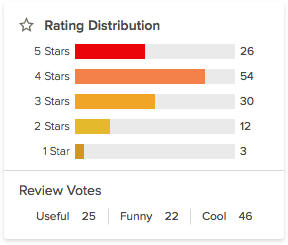 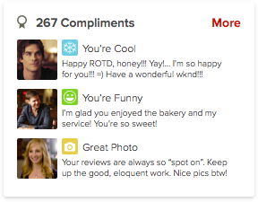Some people may feel hesitant before they friend strangers. Well, on Yelp, they don’t need to worry about that. People can be friends on Yelp just because they appreciate each other’s reviews, or they happen to feel the same way about a place. That’s why information such as rating distribution, compliments, still matters.
Activities include reviews, lists, bookmarks, etc. I found it very useful to have a menu to navigate around different content, instead of having different sections all over the places.
As for reviews, some of them are very long and users don’t really read every single line. Long reviews also take time for users to scroll down. They tend to filter the reviews and find what interest them most. Therefore, collapsing reviews seems like a good way to go.
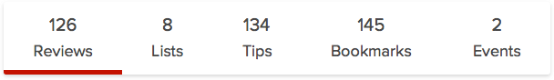 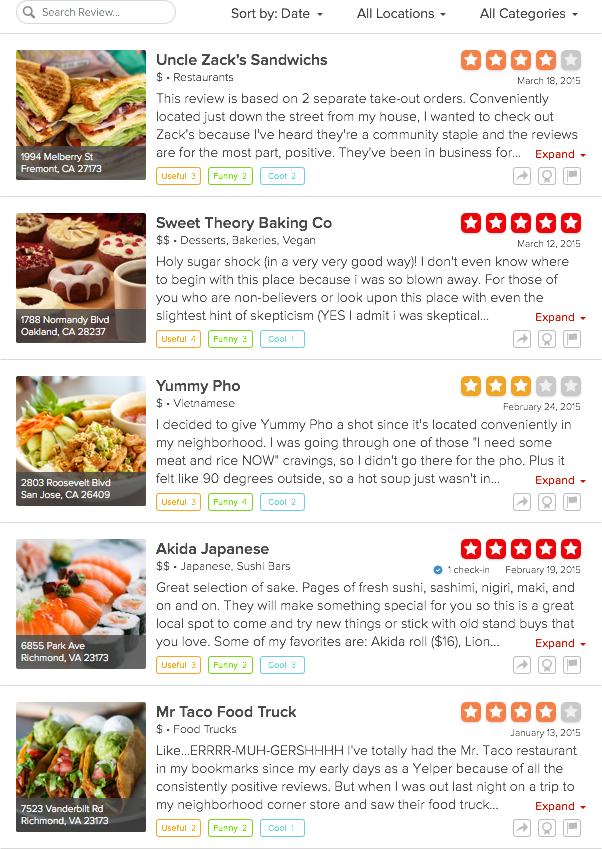The right column is where you show off the photos! And be social! It is a trend that more users tend to upload photos rather than type thousands of words. Users find very convenient to share their experiences using Yelp’s app. As mentioned before, people get visually attracted by photos more easily. So if users have amazing photos, why should they hide them. That explains why we need a section to display photos.
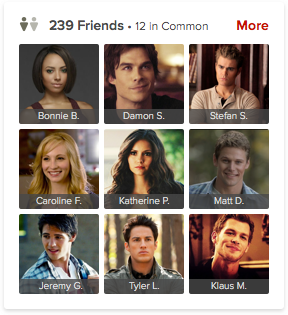 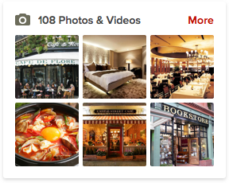In addition to the friends and photos, I’d like to add another section at the bottom right. It used to be the “Lists” feature. Since we have already organized “Lists” as part of our “Activities”, it seems redundant to have another one. Also, most users were confused about the “Lists” feature and asked questions like, “why is this even here”. I think “Lists” is a quite helpful feature. It’s just because most people pay more attention to other things that they ignore the feature of less importance to them. I think some Twitter fans don’t even know Twitter has a list feature as well.
To replace this section with something else, I conducted some interviews with one question to ask, “what is one thing that you expect Yelp to have?”.
Some users mentioned that they would to have a “tag” or “group” feature to organize their bookmarks, because they have so many bookmarks but forget about the reason why they bookmarked in the first place. I think it’s cool. And some users mentioned about a “map” idea, a map to mark the user’s favorite spots based on the reviews. It’s is really convenient for users to find local spots to dine. And here it’s a rough illustration.
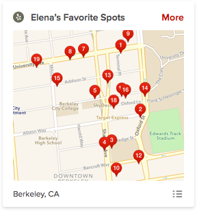This section is very flexible. It can be a recommendation section, a map, a tag lists, or anything. It could be the next cool feature of Yelp.
The design is not interactive, so there’re many features hidden in a drop-down menu. This a very interesting practice for me and I’d like to get more opinions on the redesign. Thanks for reading, and I hope you like it! ☺
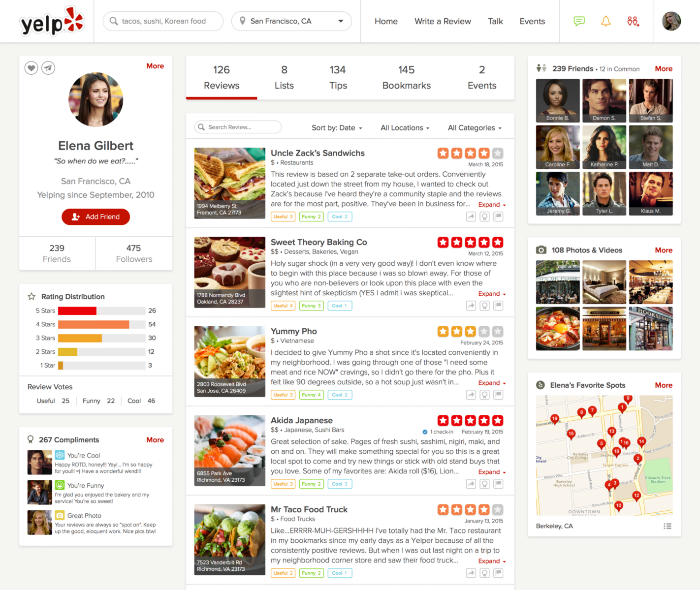